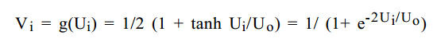

It seems that recently thanks to the buzz around Deep Learning, Neural Networks are getting back the attention that they once had. This post contains just a very short introduction to Neural Networks, just enough to understand the F# code which follows. The aim for me is to learn F# and see how easy it can be to write Machine Learning code in F#.
I present here two examples of NN in F#:
Both working examples are available at my GitHub
Artificial neural networks are computational models with particular properties such as the ability to adapt or learn, to generalise or to cluster and organise data. These models are inspired by the way that the human brain works. The building blocks of Neural Networks are inspired by Neurons - the building blocks of our brain. Neural Network can be seen as interconnected graph of nodes, where each node takes a role of a neuron. Each neuron can receive multiple signals, modify it and send it to other neurons to which it is connected. In this graph some vertexes are used to set the input, some of them are used to perform the computation and other onces will hold the output values.
Nodes are connected by edges which have different weights. The weight of the edge specifies how the signals is modified when passing from one node to another.
Perceptron is a basic block of linear neural networks. It is composed of multiple input nodes and a decision node. Perceptron is a single layer network. Input values are linked directly to the output node, connected by edges with certain weights.
The ouput node takes the incomming values, sums them and based on the result returns an output. The output could be binary or continous value. For instance a threashold can be used to say whether the output is 1 or 0.
In practice, very often the Sigmoid or also called logistic function is used to output value within the interval [0,1].
Single layer perceptrons can only learn linerearly separable data.
Imagine we want to separate a set of datapoints into multiple clusters. We visualize the data in 2-dimensional euclidian space. If we can separate the cluster by drawing direct line between the data points, the data is linearly seperable. The same can be applied on multi-dimensional data
In a world of logical functions (we are building XOR classifier), this limitation means that a single layer perceptron is able to learn AND or OR function but it won't be able to learn XOR function.
One can easily imagine a line that separates all OR positive results from the negatives once. On the other hand there is no streight line that separates the positive XOR results ([0,1] and [1,0]) from the negatives ([0,0] and [1,1])
Feed forward network can be thought as composition of perceptrons. Such network has one input layer, multiple hidden layers and one output layer. The feed forward network does not contain cycles, unlike the Hopfield network in the next examples (which is recurrent neural network).
Unlike single layer perceptron, multilayer feed forward network is capable of learning linerably non-separable data such as the results of XOR function.
This is the first example. This network is called clasifier because it learns the XOR function. It can then "classify" the 2 values in the input into single value on the output.
Here is how the network looks like:
The NN diagram was drawn in latex, using the tkz-berge package. Look here if you want to know how.
The network starts with random weights and continously updates the weights so that the result in the output node corresponds to the XOR of input values. In order to update the weights Backpropagation (Backwards propagation of errors) technique is used.
The value of the output is compared to the real value (which is known). The error is determined as the differences between the output and the real value. Then the weights of the edges has to be updated to minimalize the error as shown later.
Each layer can be represented as one dimensional array, the weights are stored using 2-dimensional array ([0,1] is the weight between nodes 0 and 1). Here is the function which calculates the sum of values incomming to a single node and passes the value to the activation function. The activation function here can be any function, as it is passed as parameter but here Sigmoid is used.
let pass (input:float[]) (weights:float[,]) activation =
let length = weights |> Array2D.length2
seq {
for i in 0 .. length-1 do
let sum = (Array.zip weights.[*,i] input) |> Array.sumBy (fun (v,w) -> v * w)
yield activation sum
} |> Array.ofSeq
By applying the pass multiple times, the whole network can be composed as sequence of pass functions.
The following function is the main loop of the XOR network and we iterate over until we obtain good results and the network is adapted.
let train network rate input target =
let n1 = completepass input network
let delta = deltaOutput n1.output target
let deltaHidden = passDelta n1.hidden delta n1.hiddenToOutput
let updatedHiddenToOut = updateWeights n1.hidden delta n1.hiddenToOutput rate
let updatedInToHidden = updateWeights n1.input deltaHidden n1.inputToHidden rate
Completepass just calls 2 times the pass function value and gets the input values trough the hidden layer to the output. The output is then compared to desired result and error is estimated. From this error an array of "delta" values per each output node is determined which is then used to update the weights.
In the case of XOR network, there is only one output, so the delta will one dimensional array.
The delta has to be propagated lower so that we can also update the weights between the input and hidden layer.
First the error of each layer has to be calculated. In the example bellow the error of the output layer is the value (t-o) or (Target - Ouput). This value is multiplied by value o*(1-o) which is the derivation of the Sigmoid function. The resulting array contains for each node a delta value, which shall be used to adjust the weights.
let deltaOutput (output:array) (target:array ) = (Array.zip output target) |> Array.map (fun (o,t) -> o * (1.0 - o) * (t - o))
Calculating the delta value for the output layer is not sufficient to correct all the weights in the network, the delta has to be propagated to the lower layers of the network, so that we can update the weights on the input - hidden connections.
let passDelta (outputs:float[]) (delta:float[]) (weights:float[,]) =
let length = weights |> Array2D.length1
seq {
for i in 0 .. length-1 do
let error = (Array.zip weights.[i,*] delta) |> Array.sumBy (fun (v,w) -> v * w)
yield outputs.[i] * (1.0 - outputs.[i]) * error
} |> Array.ofSeq
The "error" of the hidden layer is just the delta multiplied by the weight associated to the edge that propagates this delta to the lower value.
The last missing piece is the function that woudl update weights between 2 layers.
let updateWeights (layer:float[]) (delta:float[]) (weights:float[,]) learningRate =
weights |> Array2D.mapi (fun i j w -> w + learningRate * delta.[j] * layer.[i])
Learning rate is a constant that determines how quickly the edges are updated. If the learning rate is too big, the network might miss the optimal weights. However if it is too small it will take longer time to get to the correct solution.
At the beginning the weight are set to random values between 0 and 1, or slided slightly. From the quick tests that I did it seems that for instance using learning rate of 0.3 it took 20000 iterations to get to a neural network that would XOR the values on it's inputs.
TSP is one of the well known Combinatorial optimization problems and as such, it has been solved in many different ways (Integer Linear Programming, Genetic or Biologically inspired algorithms and other heuristics). Neural Networks are one of the many approaches to provide a solution to this problem.
Even within Neural Networks several different approaches have been developed to solve TSP (eg. elastic nets,self-organizing map). The approach demonstrated here is the oldest one: Hopfield neural network.
Hopfield NN is a recurrent neural network (connections in the network form cycles). The units (nodes) in a Hopfield network can have only 2 values: 0|1 or -1|1 depending on literature, but in either case values that encode a binary state). The network is fully connected (each node is connected with any other node). The connection matrix is symetric, that is the weights on the edges are the same in both directions.
The initial Hopfied network had only binary values (0/1) but to solve TSP and for other problems continous version of the network is used, where every node has value in range [0,1].
The value of each node depends on the input potential of the node (Ui) and in order to keep it between (0,1) the tanh function is used:
The value of the input potential of each node depends on the values of all nodes that are connected to it and the values of the connections weights.
Each state of the HNN can be described by a single value called Energy. While iterating and changing the state, the energy of HNN will either stay the same or will get smaller. The energy of the network will evenutelly convert to a local minimum - the state of the HNN that we target to solve the TSP
The first and original approach to solve TSP was described in 1985 by Tank and Hopfield in their paper "Neural Computation of Decisions in Optimization Problems". Since then many more attempts were made. I have found these few papers or surweys available online quite useful and have used them to deduce my implementation:
If I should pick one, I would say that the first one gave me most information about the problem, event though not enough implementation details. The others once then made it (almost) clear how to implement the solution.
The neural network used to encode the TSP and it's solution is square matrix of nodes having N rows (one for each city) and N columns (one for each position in the tour), where N is the number of cities. When the algorithm finishes and the network converges to it's final state, each node will have value of either 0 or 1. As said the network in fully inter-connected so there is an edges between each node, which is not shown in the image bellow.
If the node in i-th row and j-th column has value 1, the city (i) will be in the tour on position (j).
As described aboved the network evolves and each node changes it's value over time. The secret of the algorithm is thus to provide such update rule that at the end:
To come up with such update rule the Energy function has to be determine which will attain it's minimum for optimal solution of TSP - and so it will be based on the above specified rules. The following definition will satisfy the rules:
A,B,C and D are constants and the 4 sumations here correspond to the 4 above mentioned points.
There are two ways to describe the behaviour and the dynamic of the network:
Alternatively the input potential of a node (i) can be described by:
That is a partial a definition of the defined Energy function with respect to the value of the node (i).
The change of then potential is it's partial derivation with respect to the time. When doing a computer simulation we will described the value of Ui in time T+1, or here T+ delta t. Where delta T is some small time interval.
This equation is at the hearth of this algorithm.
The network can be stored in 2-dimensional matrix. One can choose between storing the input potential of each node or the value of the each node, because the value of the node can be calculated from the potential at any time. I have chosen the second option and I store the input potential two dimensional array u.
The following code is the calculation of the input potential change of single node at coordinates (city,position). This is just retranscription of the equation above.
let singlePass (distances:float[,]) (u:float[,]) pms city position = let n = Array2D.length2 u let values = u |> toValues pms let aSum = sumAllBut position (values |> rowi city) let bSum = sumAllBut city (values |> coli position) let cSum = (values |> Seq.cast|> Seq.sum) - float(n+1) let dSum = dSumCalc distances city position values let dudt = -pms.A*aSum - pms.B*bSum - pms.C*cSum - pms.D*dSum //value of input potential in t+ delta_t let r = u.[city,position] + pms.dTime*(-u.[city,position] + dudt) //Alternatively according to the paper by Jacek Mandziuk one can just use the update value //let r = dudt r
There are few things to note. This code takes the distances matrix, the current state of the network (the value of input potential of each node), parameters of the network (constants A,B,C,D from equations above) and row (city) and the column (position) of the node that we are updating. The toValues method takes the current value of each node potential and returns a matrix of node values. The rowi and coli method return respecively one row or one column from 2 dimensional array. The sumAllBut method adds all elements of one-dimensional array except an element at position which is passed to the method. The dSumCalc method is the only one with a bit more compexity and it calculates the D value of the equation above (the one that assures the minimalization of the TSP circuit)
let rowi row (network:float[,]) =
network.[row,*] |> Array.mapi (fun j e -> (e,j))
let coli col (network:float[,]) =
network.[*,col] |> Array.mapi (fun j e -> (e,j))
let sumAllBut (i:int) (values:(float*int)[]) =
Array.fold (fun acc (e,j) -> if i<>j then acc + e else acc) 0.0 values
let dSumCalc distances city position (v:float[,]) =
let n = v |> Array2D.length1
(distances |> rowi city) |> Array.sumBy (fun (e,i) ->
let index1 = (n+position+1) % n
let index2 = (n+position-1) % n
e*(v.[i,index1] + v.[i,index2])
)
let toValues (pms:HopfieldTspParams) u =
u|> Array2D.map (fun (ui) -> v ui pms)
//calculates the value of node from input potential
let v (ui:float) (parameters:HopfieldTspParams) = (1.0 + tanh(ui*parameters.alfa))/2.0
The method which updates the input potential of single node can be called in 2 different ways. Either we pick the nodes randomly multiple times or we loop over all the nodes serially. If the update is serial then the only random element of the algorithm is the initialization of the netwok.
let serialIteration u pms distances =
u |> Array2D.mapi (fun i j x -> singlePass distances u pms i j)
let randomIteration u pms distances =
let r = new Random(DateTime.Now.Millisecond)
let n = Array2D.length1 u
for i in 0 .. 1000*n do
let city = r.Next(n)
let position = r.Next(n)
u.[city, position] <- singlePass distances u pms city position
u
The random iteration here is repeated 1000*n times where n is the number of cities, which is probably more than enough since the network seems to converge much sooner. Just for the sake of completeness, here is the method that runs 10 times either serial or random iteration.
let initAndRunUntilStable cities pms distances =
let u = initialize cities pms
{1 .. 10} |> Seq.fold (fun uNext i ->
match pms.Update with
| Random -> randomIteration uNext pms distances
| Serial -> serialIteration uNext pms distances
) u
And here high level method, that generates a random example of TSP problem, calculates distances between all cities and runs the algorithm until a stable and correct solution is found. That is until the network returns feasable solution.
let sampleRun (pms:HopfieldTspParams ) (n:int) =
let cities = generateRandomCities n
let distances = calculateDistances cities
let networks = Seq.initInfinite (fun i -> initAndRunUntilStable cities pms distances)
let paths = networks |> Seq.map (fun v-> currentPath v)
let validPath = paths |> Seq.find (fun path -> isFeasable path)
cities, validPath
The results are not overwhelming, on the other hand I have only implemented the most simple version of the algorithm. In the original paper the authors stated that the convergence rate to feasable solutions was about 50%. But depending on the parameters one can get better results. See bellow one of the runs of the algorithm on 6 random nodes.
Here is the complete list of parameters for Hopfield network and the values that I ended up using:
I have also used the standard update rule to obtain new value of the input potential which takes into account the current input potential.
let dudt = -pms.A*aSum - pms.B*bSum - pms.C*cSum - pms.D*dSum
//value of input potential in t+ delta_t
u.[city,position] = u.[city,position] + pms.dTime*(-u.[city,position] + dudt)
According to the paper by Jacek Mandziuk one can just use the updated values as the new input potential, so that the update rule would become only:
let dudt = -pms.A*aSum - pms.B*bSum - pms.C*cSum - pms.D*dSum
u.[city,position] = dudt;
This rule didn't work for me. The convergance rate wasn't better neither were the tours lengths. Of course for such version, different values for network parameters have to be used.
Note that GitHub repostity and specifialy the Hopfield module contais more code: